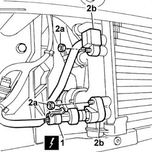
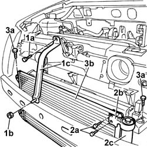

5040A40 air conditioner condenser - r+r
- Path
- Procedures > 50 AUXILIARY UNITS > 5040 AIR CONDITIONING CASING AND COMPONENTS > 5040A air conditioner coolant circuit > 5040A40 air conditioner condenser - r+r
- Kind
- repair procedure (removal / refitting; the operation number is the code)
- Applies to
- all engines; all production periods
- Interactive page
- https://sloeber94.github.io/elrnDB-fPnd/en/#/2752879
Applies to: all engines; all production periods
 Removing
Removing
 Refitting
Refitting7055B90 Left front WHEEL ARCH LINER - R.R.
7055B91 Right front WHEEL ARCH LINER - R.R.
1. Disconnect the electrical connection for the linear sensor.
 | Name | Connector |
|---|---|---|
1 | Linear sensor (for climate control) | K120 |
2. Undo the fixing nuts (2a) and disconnect the air conditioning rigid pipes (2b) from the condenser.

Applies to: all engines; all production periods
1. Undo the bolt (1a) and the nut (1b) and remove the protective bracket (1c).
2. Undo the bolts (2a) fixing the mounting bracket (2b) and undo the drier filter (2c) and remove it.
3. Undo the fixing bolts (3a) and remove the condenser (3a).

Applies to: all engines; all production periods
Refitting
RemovingPlace the condenser in position and tighten the fixing bolts.
Position the protective bracket and tighten the fixing nut and bolt.
Fit the drier filter in place and screw it in, then refit the mounting bracket and tighten the fixing bolts.
Connect the electrical connection for the linear sensor.
| Name | Connector |
|---|---|---|
- | Linear sensor (for climate control) | K120 |
Fit the rigid pipes in the housing on the condenser and tighten the fixing nuts.
7055B91 Right front WHEEL ARCH LINER - R.R.
7055B90 Left front WHEEL ARCH LINER - R.R.
0010T84 coolant for air conditioning system dehydrate and recharge
Topics linked from this page (7)
- 0010T84 coolant for air conditioning system dehydrate and recharge
- 4450B02 left front wheel r r
- 4450B04 right front wheel r r
- 7055A42 FRONT GRILLE - R+R
- 7055B90 Left front WHEEL ARCH LINER - R.R.
- 7055B91 Right front WHEEL ARCH LINER - R.R.
- 7210E10 R.R. FRONT BUMPER